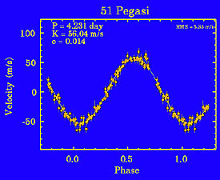
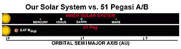
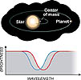

| Does 51 Pegasi's Planet Really Exist? By Joshua Roth Adapted from |  |
Above: The radial (line-of-sight) velocity of 51 Pegasi varies sinusoidally with a 4.231-day period and 56 meter/second amplitude, suggesting that the star is circled by a companion with a minimum mass of 0.47 Jupiter. Or might there be some other explanation? These observations from Lick Observatory were obtained between October 1995 and December 1996. Click on the image to pull up a larger version (48K JPEG). Courtesy Geoff Marcy and Paul Butler, San Francisco State University.
"I KNOW WHY you're calling." Paul Butler cut to the chase as soon as he answered the phone. As the codiscoverer of a half dozen planets orbiting other stars, the Berkeley scientist had a lot at stake. Word had gotten out that the evidence for some of these worlds might suffer from a fatal flaw, and that a paper in the prestigious journal Nature would make it plain for all to see.
Hardly 16 months had passed since Michel Mayor and Didier Queloz (Geneva Observatory) rocked the world with their announcement of a Jupiter-mass object orbiting a nearby Sunlike star. That star's periodic wobbles -- attributed to the gravitational tug of a massive planet -- were quickly confirmed by Geoffrey Marcy (San Francisco State University) and Butler at Lick Observatory (S&T: January 1996, page 38). Marcy and Butler then started analyzing the data they'd long been acquiring on 120 other stars, and out popped two more planets. A new astronomical era was born.
 If 51 Pegasi does have a planet, it's in a decidedly different configuration than we're used to on the basis of our own solar system. Courtesy Geoff Marcy and Paul Butler, San Francisco State University.
These substellar companions were discerned by tracking tiny Doppler shifts in their stars' spectra (S&T: August 1996, page 20). Each star, it seemed, was playing gravitational see-saw with its planet, orbiting their shared center of mass. So small are the motions (you've probably driven faster) that only a handful of instruments can pick them up. Yet cross-checks between observers bolstered the claims, as did the fact that each star has stayed faithfully on its putative orbital track for years.
Of course, the possibility existed that some intrinsic stellar property was shifting the spectral lines. Mayor and Queloz were well aware of this when they went public, and their published account addressed stellar pulsation or the rotation of a spotted star as alternative interpretations. At the time, neither of these alternatives seemed to explain away 51 Pegasi's planet. But that didn't stop one astronomer from wondering if the star's atmosphere might be playing tricks on the planet pursuers.
A NAYSAYER SPEAKS
In doing so, Gray found that the iron absorption line he studied was tilting one way, then the other, in lock step with the putative planet's orbit. His observations were infrequent, and he could only measure the line's shape, not its exact wavelength. But the wiggling he reported in the February 27, 1997, issue of Nature was nearly as large as the motions that betrayed 51 Pegasi's companion. Orbital motions can't change the shape of a spectral line, only its position. "Therefore," Gray wrote in Nature, "the planet hypothesis is no longer an adequate interpretation of the data."
  Shifting or tilting? Planet-hunting astronomers have found that 51 Pegasi's spectral lines have shifted subtly back and forth, as would be expected if the star circled the center of mass it shares with a massive planet (left). But Canadian astronomer David Gray sees evidence that the features tilt back and forth (right). To him, this means that the star is vibrating in a complex way and that the planet doesn't exist. (Spectral features are greatly exaggerated for clarity.) Sky & Telescope diagrams.
Shifting or tilting? Planet-hunting astronomers have found that 51 Pegasi's spectral lines have shifted subtly back and forth, as would be expected if the star circled the center of mass it shares with a massive planet (left). But Canadian astronomer David Gray sees evidence that the features tilt back and forth (right). To him, this means that the star is vibrating in a complex way and that the planet doesn't exist. (Spectral features are greatly exaggerated for clarity.) Sky & Telescope diagrams.
Instead, says Gray, 51 Pegasi seems to undergo complex pulsations that somehow tilt the lines back and forth. The pattern he envisions divides the star into four orange-like slices that alternately expand and contract. In an Astrophysical Journal paper due out on November 10, 1997, Gray and Artie Hatzes (University of Texas) demonstrate that this kind of "non-radial oscillation" can explain 51 Pegasi's behavior -- without a planet in the picture.
TO A PLANET'S DEFENSE
But after reading a rebuttal that Mayor, Queloz, Marcy, and Butler posted on the World Wide Web, Boss felt "tremendously relieved." In a reversal of hallowed scientific protocol, the quartet electronically published a response to a paper that itself hasn't yet seen print. His rebuttal (available along with vast amounts of related information on the "Searching for Extrasolar Planets" site at San Francisco State University) spells out numerous objections to the nonradial-pulsation model for 51 Pegasi's spectral fluctuations.
First, the planet finders cite an article by Hatzes and two Texas colleagues. They have one of the few spectroscopes capable of measuring detailed spectral-line shapes in Sunlike stars, and their study of eight atomic features doesn't replicate Gray's findings.
Second, they note that 51 Pegasi's brightness has been monitored by Gregory Henry (Tennessee State University) and his colleagues with an automated 30-inch telescope on Arizona's Mount Hopkins. Presumably, this should have revealed some trace of variability if the star is vibrating. But none was found down to an impressive precision of only 2 parts in 10,000 (0.0002 magnitude).
A third objection addresses the rock-steady sinusoidal nature of the stars' radial-velocity variations. Complexly vibrating stars generally ring with a variety of tones, like bells, and they often switch between them. Orbital motion, by contrast, displays the simple clocklike stability actually seen in the stars' spectral shifts. What's more, the four "51-Peg-like" stars are oscillating with very different periods and amplitudes -- which seems unlikely in stars so nearly alike.
Left: Paul Butler (left) and Geoffrey Marcy have risen to the defense of 51 Pegasi's planet. © 1997 San Francisco Chronicle. Right: David F. Gray asserts that the star has no planet after all.
But Gray isn't perturbed. "Some people say the star can't be pulsating" without showing brightness variations. But he asserts that his still unpublished model handily passes this test. He also points out that 51 Pegasi seems to be older than the Sun and has begun to wander from the hydrogen-burning main sequence; maybe it is susceptible to instabilities that aren't seen in younger stars. In addition, Gray's Nature paper notes that the relative strength of two spectral lines -- one from iron, the other vanadium -- is changing in lock step with the line tilts, further attesting to some kind of changes within the star's atmosphere.
For his part, Hatzes cautions that his measurements didn't span 51 Pegasi's 4.2-day period as fully as did Gray's. And Pawan Kumar, a stellar-oscillation theorist at Princeton's Institute for Advanced Study, sees no reason why oscillations can't carry on like clockwork for thousands of years if they're so-called gravity modes, rather than sound waves like the Sun's.
But Kumar does find it implausible that 51 Pegasi's surface would evince a 4.2-day period without other harmonics coming into play. And Harvard University's Robert Noyes -- whose Mount Hopkins spectrograph is also hot on the trail of extrasolar planets -- can't imagine how the star's surface could move at 50 or 60 meters per second for several days without changing its brightness. However, Hatzes points out that both the size and temperature of a shaking star change, and if they did so out of phase, brightness variations could conceivably be minimized.
ONE STEP BACK, TWO STEPS FORWARD
In any case, no one, not even Gray, asserts that all the extrasolar planets are false alarms. Stellar pulsations are unlikely to explain away those with longer orbital periods or those with very high velocities. And the evidence for two Jupiter-mass companions to Lalande 21185, while provisional, relies on positional measurements that are immune to stellar oscillations.
So the planet hunters remain upbeat. Marcy and Butler have begun observations with the Keck I 10-meter reflector. Hatzes and his colleague William Cochran will soon taking spectra with the 11-meter Hobby-Eberly telescope in western Texas. And Mayor and Queloz are about to direct a dedicated 1.2-meter telescope in Chile toward some 800 southern stars. At the same time, all parties agree on one point: that their enterprise depends crucially on understanding the stars that are leading them to unseen worlds.
Joshua Roth is technical editor of Sky & Telescope. He earned his Ph.D. in astronomy from Caltech.
The Planet of 51 Pegasi Does Exist
Adapted from Sky & Telescope, March 1998
In October 1995 astronomers in Switzerland announced that 51 Pegasi, a solar-type star 50 light-years distant, is closely orbited by a giant planet. It was hailed as one of the landmark discoveries of modern times. But a year ago the planet came under challenge. David F. Gray (University of Western Ontario) announced that the crucial evidence appeared to be flawed. The star's spectral lines were not just shifting in wavelength as would happen if an orbiting planet tugged the star back and forth, he said; instead the spectral lines were also changing shape slightly, as if the whole effect were merely due to a complex, nonradial pulsation in the star's atmosphere. Doppler shifts caused by an orbiting planet cannot change line shapes, as explained in the preceding article adapted from the May 1997 issue of Sky & Telescope.
Now planet hunters can breathe a sigh of relief. The star's spectral lines do not in fact change shape but seem to show pure Doppler shifts, Gray and others have concluded. The situation was unclear because the required measurements are extremely subtle. The star's periodic Doppler shift amounts to only 56 meters per second, which induces a change in wavelength of one part in five million. This is just a tiny fraction of each spectral line's intrinsic width. Only a few spectrographs in the world can analyze spectral line profiles with the needed precision, and Gray's original observations were widely scattered in time.
Gray's retraction appears in the January 8th issue of Nature. In the same issue Artie Hatzes and colleagues at McDonald Observatory announce that they too find no sign of spectral line shape changes in 51 Pegasi, using equipment with more than twice the spectral resolution Gray's. Independent studies led by Timothy M. Brown (High Altitude Observatory) and by Hatzes also seem to rule out oddball pulsations in Tau Boötis, whose own putative planet was discovered shortly after 51 Pegasi's. More on extrasolar-planet studies appears in the March 1998 issue of Sky & Telescope.
Copyright © 1998 Sky Publishing Corporation. All rights reserved. This material may not be reproduced in any form without permission. For more information contact Sky Publishing Corp., P.O. Box 9111, Belmont, MA 02178-9111, USA. Phone: 1-617-864-7360. Fax: 1-617-576-0336 (editorial only), 1-617-864-6117 (all other).